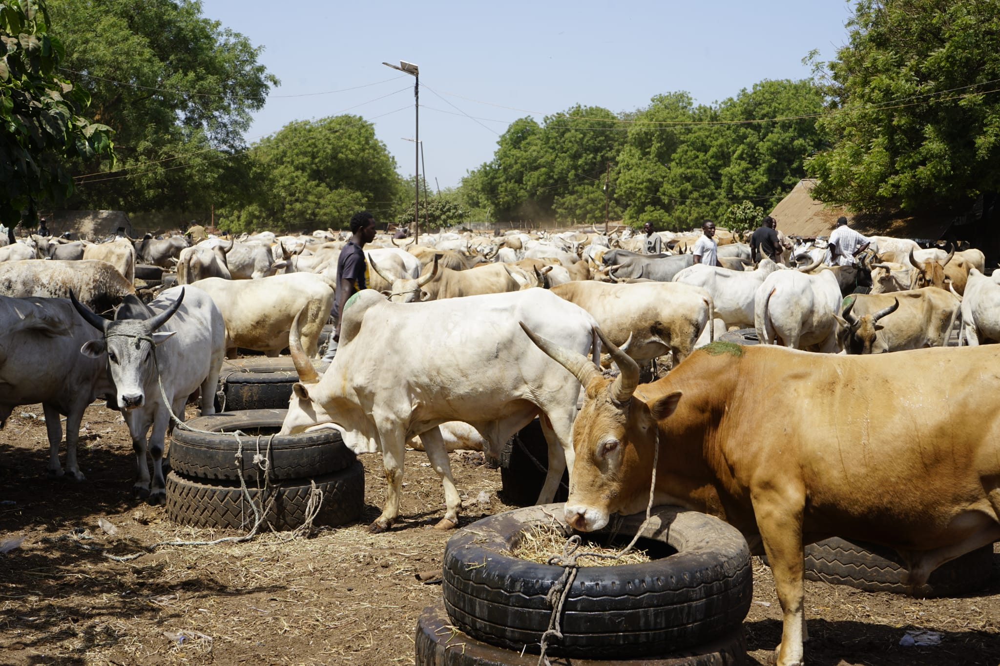

DISCOVER . EXPLORE . ENJOY
Welcome to our guided tours
Discover beautiful places, amazing people and unforgettable experience with us.
|
DISCOVER . EXPLORE . ENJOY Welcome to our guided toursDiscover beautiful places, amazing people and unforgettable experience with us. |
Choose an adventure and let's explore together.

|
Experience The Gambia TourLooking forward to experiencing the gambia in the must typical way, you are at the right place and this tour here is the perfect tour for you, our guides will be there to explain everything detailed in each of this places you visit. Experience the gambia tour is a tour that takes you to seven different places in one day and its gives you the perfect insight of the typical gambia way of life. on this tour you will visit the crocodile pool in bakau, serekunda market(biggest markert), local school,local family, brikama wood factory, Sanyang beach(where lunch is served) and last stop at tangji fishing village. |
|
 |
Our Community TourThis Tour gives visitors the opportunity to experience everyday life, traditions and culture in gambian communities.Visitors can meet local families, explore villages, learn about traditional crafts, taste local foods and enjoy music and cultural activities. it is a great way to connnect with the friendly people of The Gambia while supporting local communities and small businesses. |

|
Nature Adventure TourExperience the natural beauty of The Gambia on an exciting Nature Adventure Tour. The tour includes a visit to Abuko Nature Reserve, where you can discover wildlife and enjoy a peaceful walk through the forest. continue to lamin lodge, a beautiful riverside spot surrounded by mangroves and natural scenery.The adventure ends at Paradise Baech, where you can relax by the coast and enjoy a delicious local lunch while taking in the beautiful beach views. |

|
GEORGETOWN OVERNIGHT TOURThis is an overnight trip, which gives you the chnace to see the real Gambian way of living through its rich landscape and local villages. You will have a boat trip the baboon island where you may see chimpanzees,hippos,crocodiles, baboons, monkeys and different species of birds. You will also visit the stone cycles before driving to Georgetown. You will be taken around the stones narrating the history behind the stones. Then once in Georgetown you will be lodged in your hotel, relax for the night after dinner and the next day after breakfast you will visit the underground slave house, Governors Residence, freedom tree, Central Prison and Armitage high school. Then we leave on the south bank with interesting stops on the way back to your hotel.
|
Ready for an AdventureContact us and let's plan your next tour. |